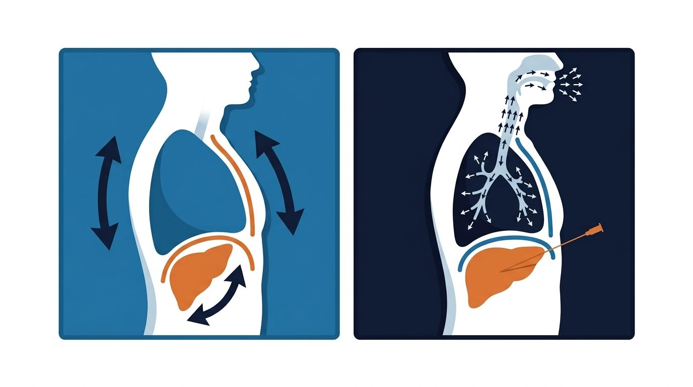

Everything you need for a jet case in IR, in the order you'll need it. Tap any dotted term for a definition.

Tap a layout for details.
One phase at a time. Your ticks are saved on this device.
Every item is confirmed. Practice the case in the simulator next.
Start the jet, stabilize TcCO₂, take the initial scan, then handle what the case throws at you. 1 second here = 30 seconds in the case.
Starts the jet if needed. Try it both before and after the initial scan.
Short decision drills. Answers are shuffled each time.
Settings, troubleshooting and contacts. Printable for the station.
| WHO | CONTACT |
|---|---|
| Sentec Rep Lauren | 816-808-7150 |
| Monsoon Rep Travis Schaszberger | 888-730-5463 |
| IR Anesthesia Tech Amy Jimenez / Jerry Trejo | Text at 6:30 AM |